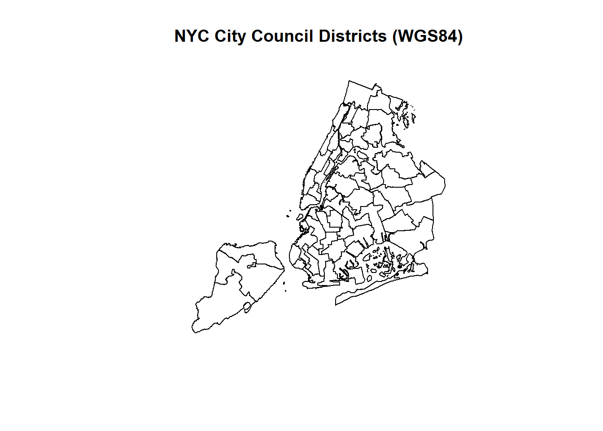

Code
# Install (only if needed)
pkgs <- c("sf", "dplyr", "readr", "httr2", "withr")
new_pkgs <- pkgs[!pkgs %in% installed.packages()[, "Package"]]
if (length(new_pkgs)) install.packages(new_pkgs)
# Load
library(sf)
library(dplyr)
library(readr)
library(httr2)
library(withr)
# .zip link from DCP:
council_zip_url <- "nycc_25c.zip"
unzip("data/mp03/nycc_25c.zip", exdir = "data/mp03/nycc_25c")
# --- Locate the .shp inside the unzipped folder (recursive in case DCP nested subfolders) ---
shp_file <- list.files("data/mp03/nycc_25c",
pattern = "\\.shp$", full.names = TRUE, recursive = TRUE)
if (length(shp_file) == 0) {
stop("No .shp found under data/mp03/nycc_25c. Re-check unzip. Try: unzip('data/mp03/nycc_25c.zip', list = TRUE)")
}
# --- Read, transform, (optionally) simplify ---
districts <- sf::st_read(shp_file[1], quiet = TRUE)
districts <- sf::st_transform(districts, crs = "WGS84")
# Optional: simplify for faster plotting (tweak tolerance if edges look too coarse)
districts <- districts %>% mutate(geometry = sf::st_simplify(geometry, dTolerance = 5))
# --- Quick plot ---
plot(sf::st_geometry(districts), main = "NYC City Council Districts (WGS84)")
Code
get_nyc_council_districts <- function(
zip_url_or_path, # either HTTPS URL from DCP OR a local path like "data/mp03/nycc_25c.zip"
data_dir = "data/mp03", # where to store zip/unzip
zip_name = NULL, # optional; defaults to basename(zip_url_or_path)
unzip_dir_name = "nycc_25c", # folder to unzip into
simplify_tol_m = NA # e.g., 5 (meters) for faster plotting; NA to skip
) {
# 1) Ensure data dir exists
dir.create(data_dir, recursive = TRUE, showWarnings = FALSE)
# 2) Resolve zip path (download only if needed)
if (is.null(zip_name)) zip_name <- basename(zip_url_or_path)
zip_path <- file.path(data_dir, zip_name)
unzip_dir <- file.path(data_dir, unzip_dir_name)
is_url <- grepl("^https?://", zip_url_or_path, ignore.case = TRUE)
if (!file.exists(zip_path)) {
if (is_url) {
message("Downloading zip once to: ", zip_path)
download.file(zip_url_or_path, destfile = zip_path, mode = "wb", quiet = FALSE)
} else {
# treat input as local file the user already has (e.g., "data/mp03/nycc_25c.zip")
if (!file.exists(zip_url_or_path)) {
stop("Local zip not found: ", zip_url_or_path)
}
file.copy(zip_url_or_path, zip_path, overwrite = FALSE)
message("Copied local zip to project data dir: ", zip_path)
}
} else {
message("Zip already present: ", zip_path)
}
# 3) Unzip only if needed
if (!dir.exists(unzip_dir)) {
message("Unzipping to: ", unzip_dir)
unzip(zip_path, exdir = unzip_dir)
} else {
message("Already unzipped: ", unzip_dir)
}
# 4) Find .shp inside unzipped dir (recursive in case DCP nested folders)
shp_files <- list.files(unzip_dir, pattern = "\\.shp$", full.names = TRUE, recursive = TRUE)
if (length(shp_files) == 0) {
# Helpful debugging hint
cat("\nNo .shp found. Zip contents:\n")
print(unzip(zip_path, list = TRUE))
stop("No .shp file found under: ", unzip_dir)
}
if (length(shp_files) > 1) {
message("Multiple .shp files found; using the first: ", basename(shp_files[1]))
}
# 5) Read shapefile
districts <- sf::st_read(shp_files[1], quiet = TRUE)
# 6) Transform to WGS84
districts <- sf::st_transform(districts, crs = "WGS84")
# 7) Optional: simplify for faster plotting
if (!is.na(simplify_tol_m)) {
districts <- districts %>%
mutate(geometry = sf::st_simplify(geometry, dTolerance = simplify_tol_m))
}
# 8) Return transformed sf
return(districts)
}